Checked Appliances
Dishwasher Repair in Knoxville
- Dishwasher repair for machines that will not drain, start, fill, or finish
- We repair all major brands, including Bosch, Whirlpool, KitchenAid, GE, and Maytag.
- Same day dishwasher repair across Knoxville
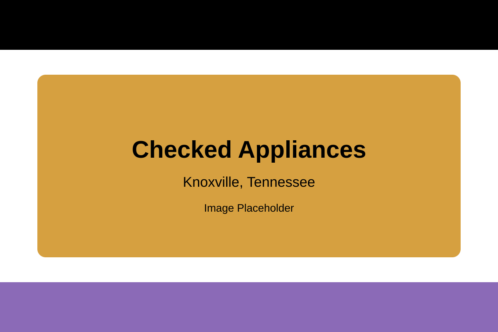
Common Dishwasher Problems We Repair
See Our Knoxville Dishwasher Repair Team at Work
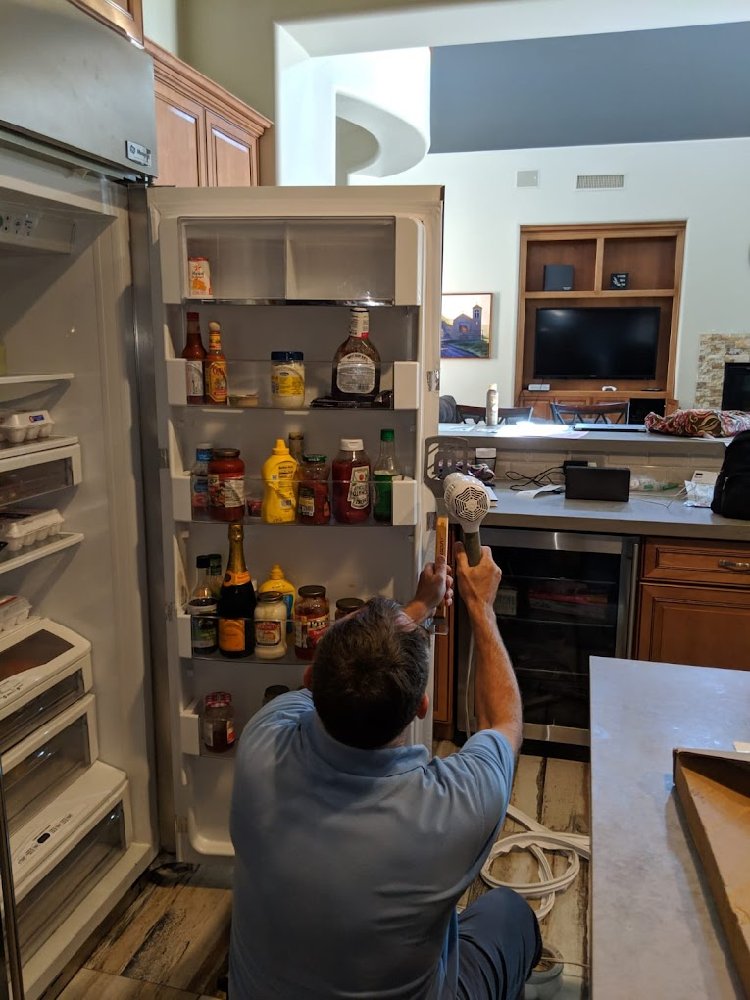
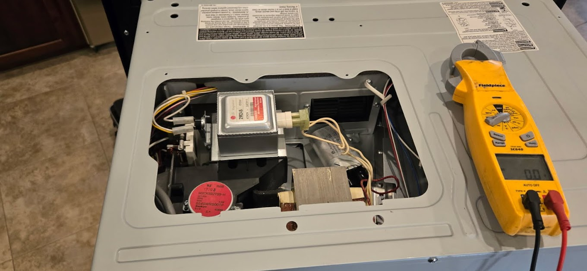
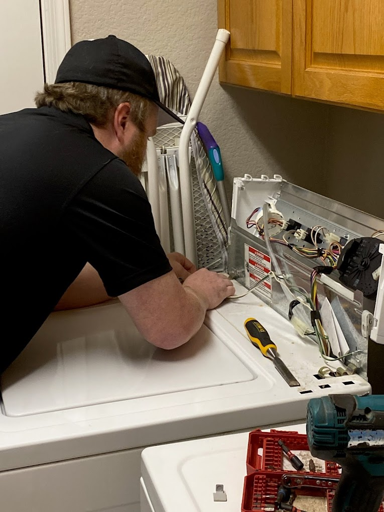
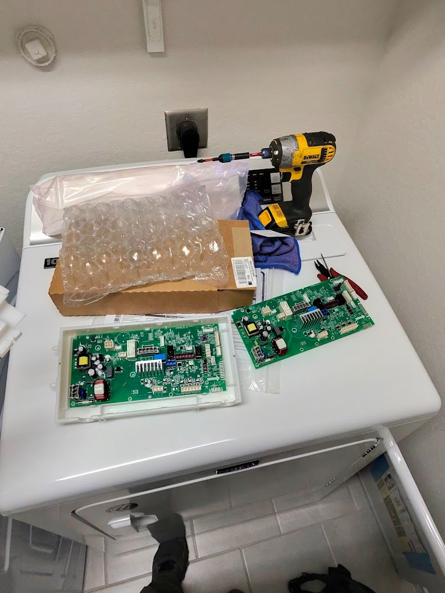
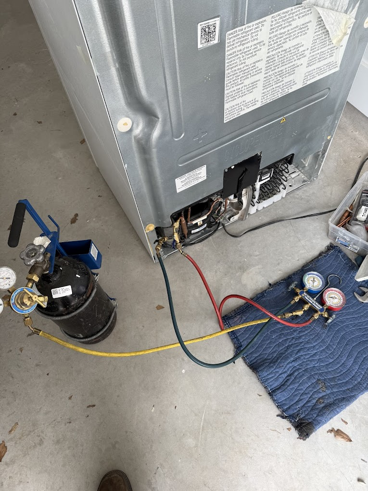
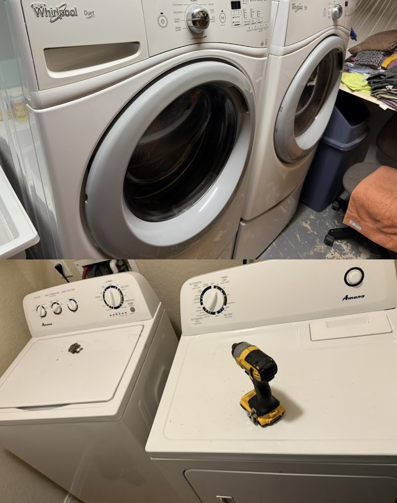
Checked Appliances Is the Best Local Choice for Dishwasher Repair in Knoxville
When a dishwasher stops working, the kitchen gets backed up fast and small cleanup problems can turn into a daily hassle for the whole house.
Checked Appliances helps Knoxville homeowners with dishwasher issues like standing water, dishes coming out dirty, leaks, poor draining, and cycle interruptions with service that stays practical and easy to understand.
We take time to understand the symptom, explain what may be happening inside the dishwasher, and help you move toward the right repair decision with confidence.
See What People Have to Say About Our Knoxville Dishwasher Repair
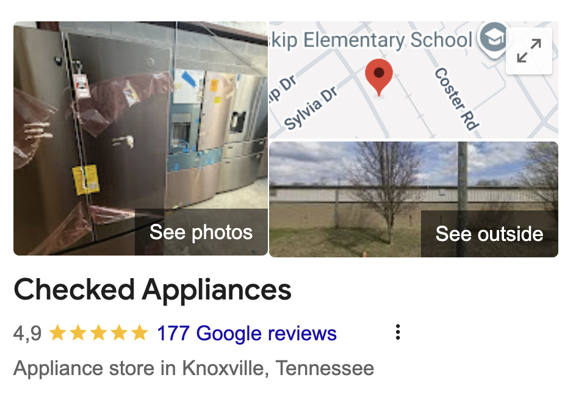
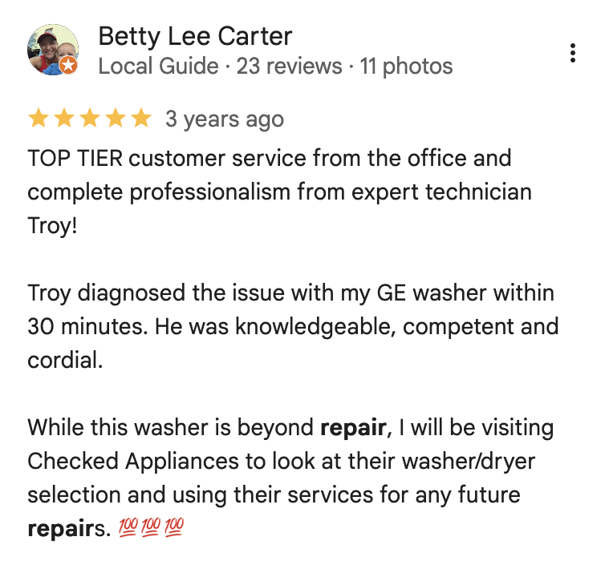
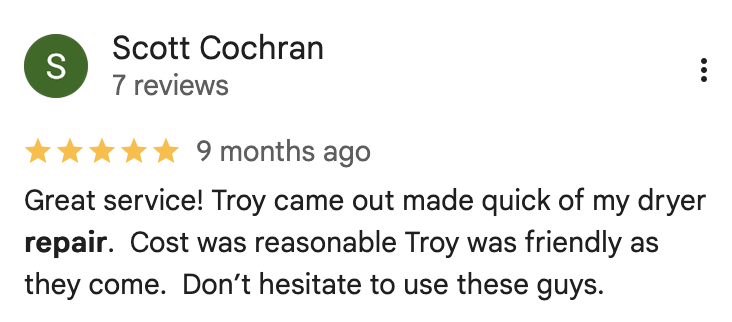
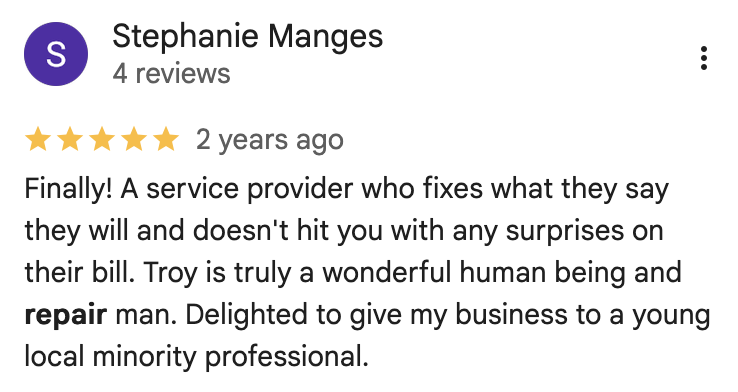
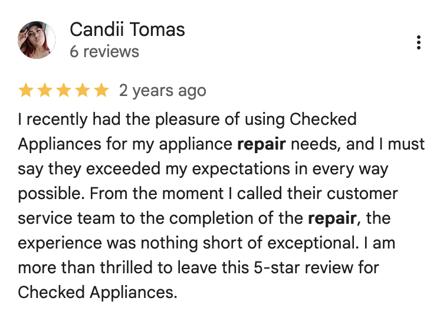
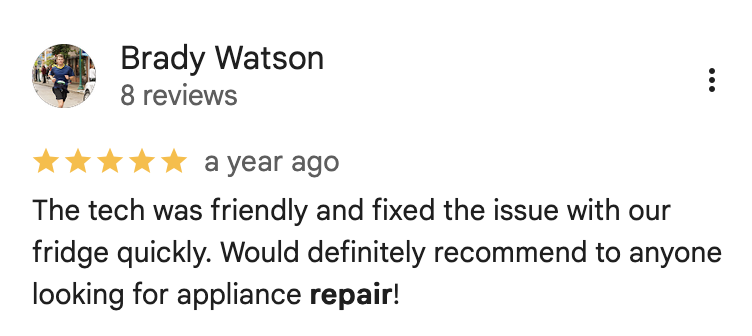
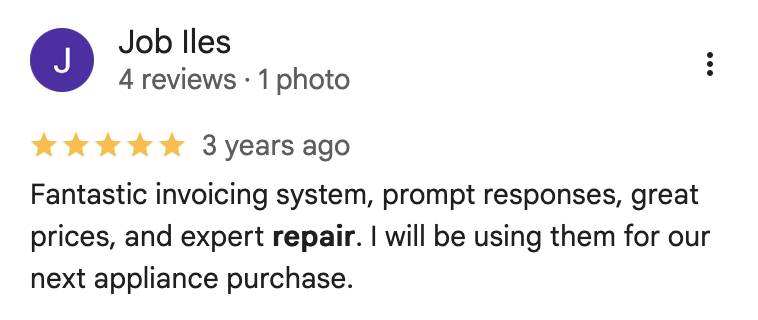
Trusted Dishwasher Repair
Why Knoxville Homeowners Choose Checked Appliances for Dishwasher Repair
Fast Help for Kitchen Disruptions
A broken dishwasher can leave the kitchen backed up quickly. We focus on fast Knoxville scheduling so you can get answers and get your routine back on track sooner.
Practical Dishwasher Diagnostics
If the dishwasher will not drain, will not start, leaves dishes dirty, or keeps stopping mid-cycle, we help narrow down the likely issue and explain the repair direction clearly.
Straightforward Communication
You should not have to guess what is wrong with your dishwasher. We keep the process clear, explain the repair before work begins, and keep the next step simple.
How Our Dishwasher Repair Process Works
From the first call to the finished appointment, here is what Knoxville homeowners can expect when they contact us about dishwasher repair.
Tell Us What the Dishwasher Is Doing
Let us know whether the dishwasher is not draining, not starting, leaking, leaving dishes dirty, stopping mid-cycle, or showing an error code.
We Review the Problem and Scheduling
The more we understand about the symptom, the easier it is to talk through timing, likely causes, and what to expect from the next step.
Schedule Dishwasher Repair Service
Once we have the basics, we can help you move toward diagnosing and repairing the dishwasher in your Knoxville home.
Request a Dishwasher Repair Quote
Tell us what your dishwasher is doing, how long the issue has been happening, and how to reach you so we can follow up quickly about service.
- Built-In and Standard Dishwasher Help
- Fast Scheduling and Response
- Clear Repair Communication
Got Questions? We've Got Answers
Here are a few of the most common questions Knoxville homeowners ask before booking dishwasher repair service.
What kinds of dishwasher problems do you fix?
We help with common dishwasher issues like standing water, poor cleaning, leaks, fill problems, bad smells, unusual noises, and cycle interruptions.
Do you work on built-in and standard dishwashers?
Yes. We help with many common built-in and standard dishwasher problems in Knoxville homes.
What should I do if my dishwasher is leaking or leaving water in the bottom?
If the dishwasher is leaking or leaving standing water in the bottom, it is usually best to stop using it until the issue is evaluated so the problem does not get worse.
Can you help if the dishwasher keeps stopping mid-cycle?
Yes. If the cycle stops early, the dishwasher shuts down too soon, or the machine keeps showing an error, we can help assess what may be causing it.
How fast can I schedule dishwasher repair in Knoxville?
Scheduling depends on availability, but same-day or next-day options may be available in many cases. Calling is the fastest way to check.
How do I request dishwasher repair?
Call (888) 402-2210 or use the form on this page and let us know what your dishwasher is doing so we can follow up about service.